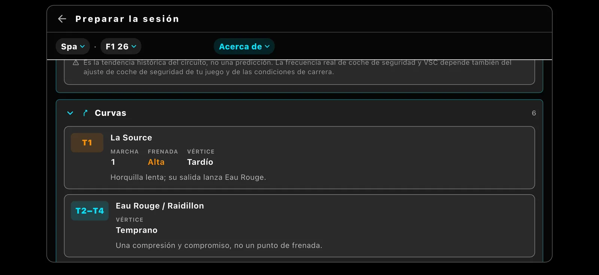
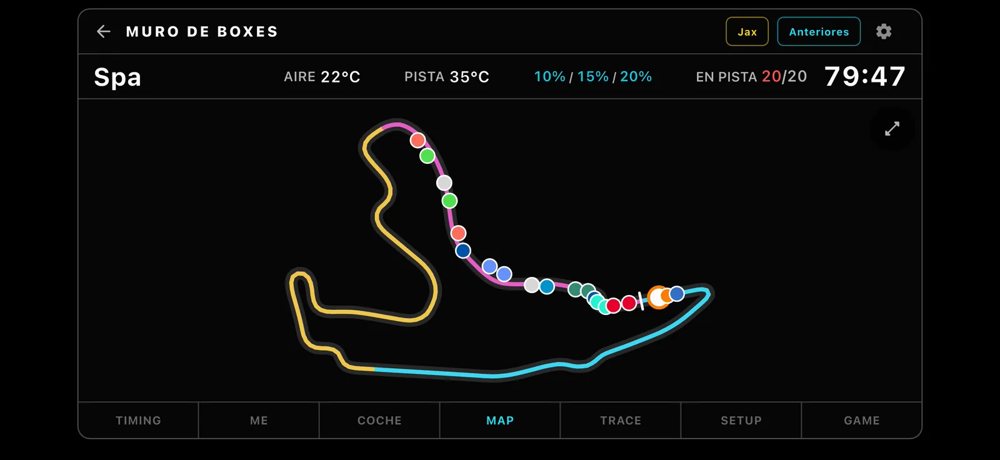
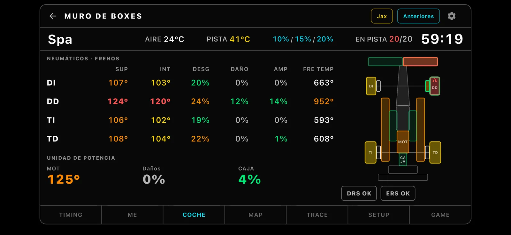
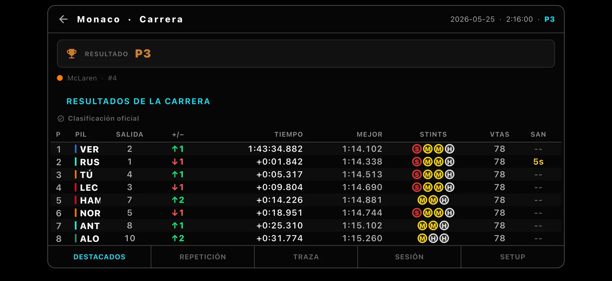

Nunca se publican
Tus reglajes, trazas de vuelta e historial de carrera nunca aparecen en una clasificación ni se comparten con otros pilotos.
Compañero de sim racing para iPhone
Tu teléfono se convierte en tu panel en vivo, o en el muro de boxes junto a tu cockpit. Jax Max Delta transforma la telemetría de F1 en vivo en asistencia en pista — y guarda la memoria de cada sesión para prepararte mejor para la siguiente.
Preparar sesión en Spa — el mapa y luego curva a curva
Antes · Durante · Después
Jax Max Delta te acompaña de principio a fin: lo que debes saber antes de salir del garaje, lo que importa mientras conduces y lo que realmente pasó cuando todo termina.
Antes
Elige el circuito y el coche, y estudia el trazado, las curvas, los neumáticos, las notas de reglaje y tu propio historial allí.
Durante
Un panel en vivo, Jax por radio y un muro de boxes completo — legibles de un vistazo en tu teléfono.
Después
Cada sesión guardada en tu dispositivo: resultados, reglajes, condiciones, trazas de vuelta — y la repetición de cómo se desarrolló la carrera.
Antes · Preparar sesión
Preparar sesión reúne el conocimiento del circuito y tu propio historial. Elige la pista y el coche, y repasa lo que importa para la próxima sesión — libres, clasificación, sprint o carrera.
Los datos de preparación varían según el circuito y el coche. JMD muestra lo que tiene para la combinación que elijas y te avisa cuando algo no está disponible.



Durante · Panel en vivo
Coloca tu iPhone junto al volante y mantén a la vista los datos que importan — sin cambiar de cámara ni saturar el HUD del juego.
Jax · Voz
Jax es la voz de tu ingeniero de carrera: mensajes breves y oportunos sobre lo que acaba de cambiar, para que no apartes la vista de la pista. Elige qué categorías quieres oír — y ajústalas en plena sesión con el botón Jax del muro de boxes.
Jax informa y recuerda. La conducción — y las decisiones de estrategia — siguen siendo tuyas.
Durante · Muro de boxes
Cuando necesites más que el panel, abre el muro de boxes — con un toque desde el panel o directamente desde Inicio. Toda la parrilla, todo el circuito y tu propio coche en una sola vista horizontal.



Después · Race Replay
Race Replay reconstruye una carrera a partir de la telemetría que JMD captó y la reproduce vuelta a vuelta: la torre de tiempos reordenándose, las diferencias abriéndose y cerrándose, los cambios de neumáticos y los momentos que la decidieron.
Carreras y sprints
Race Replay trabaja con los datos que tu dispositivo recibió durante la carrera. Si el juego no envía una clasificación final, JMD reconstruye el resultado a partir de los tiempos captados cuando hay suficientes — nunca inventa lo que no se recibió.
Más sobre Race Replay →Después · Historial de sesiones
Las sesiones completadas se guardan en tu dispositivo y se analizan según lo que fueron: los libres y la clasificación se centran en el ritmo; las carreras cuentan toda la historia.
Lo que contiene una sesión depende de lo que envió el juego. JMD completa huecos con los datos captados cuando puede, y muestra como faltantes los datos que faltan.


Privado desde el diseño
Muchos servicios de telemetría giran en torno a clasificaciones y vueltas compartidas. Los pilotos de liga y de esports protegen sus reglajes, sus trazas y su técnica — por eso Jax Max Delta los mantiene privados.
Tus reglajes, trazas de vuelta e historial de carrera nunca aparecen en una clasificación ni se comparten con otros pilotos.
Sesiones, reglajes, trazas de vuelta e historial de carrera se guardan en el almacenamiento privado de la app en tu dispositivo.
Nada que registrar y ninguna recogida automática de emails.
La copia de seguridad opcional va a tu contenedor privado de iCloud, que Camilore no puede leer. Las trazas de vuelta se quedan en tu iPhone.
Sin anuncios ni rastreo. Los reportes de fallos pasan por Firebase Crashlytics, y Apple y RevenueCat confirman tu suscripción — nunca tus datos de carrera.
Compatibilidad
Jax Max Delta escucha la telemetría UDP que tu juego EA SPORTS F1 envía por tu red local. Tu iPhone solo necesita estar en la misma red que tu consola o PC.
Android aún no está disponible.
Disponibilidad
Jax Max Delta se prepara para su lanzamiento público en iPhone. ¿Tienes preguntas o comentarios mientras tanto? Nos encantará leerte.